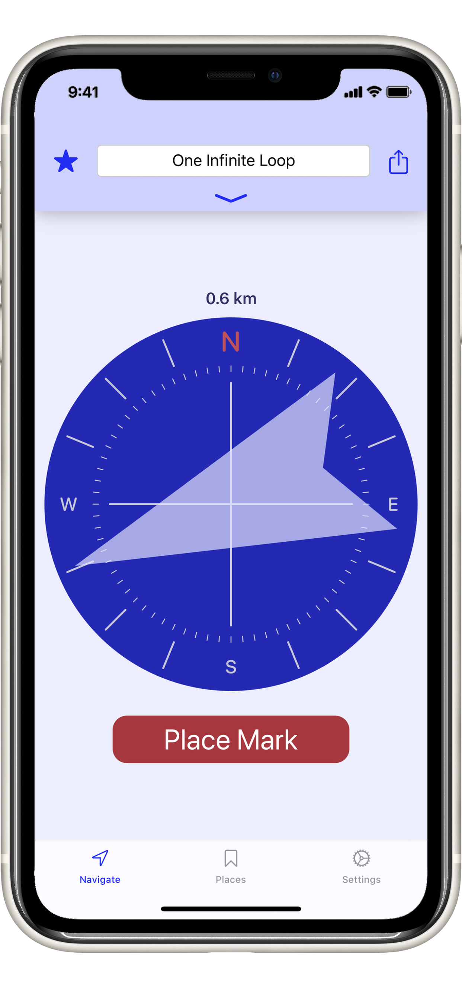

Placemark+
Mark your current location and Placemark+ will help you find your way back.
- Never forget where you parked your car.
- Designate a meeting spot for your family’s day at the amusement park.
- Note the location of that awesome coffee shop you just stumbled across.
- Get back to your hotel after a day out in a new city.
There are many apps that help you get around, but none are as convenient as Placemark+. Simply push the big “Place Mark” button to save your location, then go about your business. When you’re ready to return, Placemark+ will point you in the right direction, and a map from your current location to your marked destination is just one tap away. Pull down on the place detail pane to view and edit address information or add your own notes or photos.
Placemark+ keeps track of the places you’ve visited and lets you save a list of your favorite locations. Tap on one of your favorites and Placemark+ will take you there. You can even send a stored location to your favorite turn-by-turn navigation app, or share it with a friend via text or e-mail.
Placemark+’s minimalist design emphasizes simple, frictionless efficiency. It shows you just the information you need to get where you’re going without any extra clutter or distractions.
Placemark+ requires iOS 13.
Placmark+ includes no ads or web tracking of any kind. Our privacy policy can be found here.